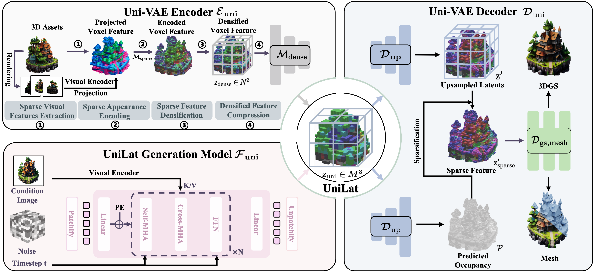

Geometry-Appearance Unified Latents for Single-Stage 3D Generation
*Equal contribution. ✉Corresponding author.
We propose UniLat3D, a novel one-stage 3D generation framework, which unifies geometry and appearance in a compact latent representation, achieving superior performance than common two-stage 3D generation models.
High-fidelity 3D asset generation is crucial for various industries. While recent 3D pretrained models show strong capability in producing realistic content, most are built upon diffusion models and follow a two-stage pipeline that first generates geometry
and then synthesizes appearance. Such a decoupled design tends to produce geometry–texture misalignment and non-negligible cost. In this paper, we propose UniLat3D, a unified framework that encodes geometry and appearance
in a single latent space, enabling direct single-stage generation. Our key contribution is a geometry–appearance Unified VAE, which compresses high-resolution sparse features into a compact latent representation -- UniLat. UniLat integrates
structural and visual information into a dense low-resolution latent, which can be efficiently decoded into diverse 3D formats, e.g., 3D Gaussians and meshes. Based on this unified representation, we train a single flow-matching model to map
Gaussian noise directly into UniLat, eliminating redundant stages. Trained solely on public datasets, UniLat3D produces high-quality 3D assets in seconds from a single image, achieving superior appearance fidelity and geometric quality.
Click on the cards to view extracted GLB files.

Illustration of the UniLat3D framework. In the reconstruction stage, the encoder of Uni-VAE \(\mathcal{E}_\mathrm{uni}\) converts the 3D asset \(\mathcal{O}\) to the unified latent -- UniLat \(\mathbf{z}_\mathrm{uni}\), which can be directly denoised
from noise \(\epsilon\) by a single flow model \(\mathcal{F}_\mathrm{uni}\) in the generation stage. The obtained UniLat can be transformed into target 3D representations by the decoder \(\mathcal{D}_\mathrm{uni}\).
This project page is based on TRELLIS. We sincerely appreciate the excellent works of these authors. If you find our work useful, please consider citing: